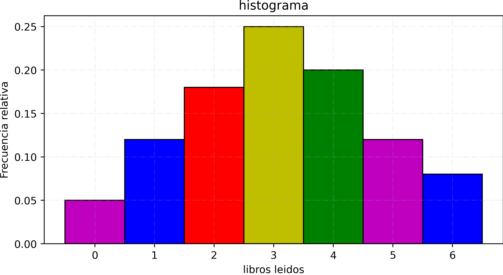
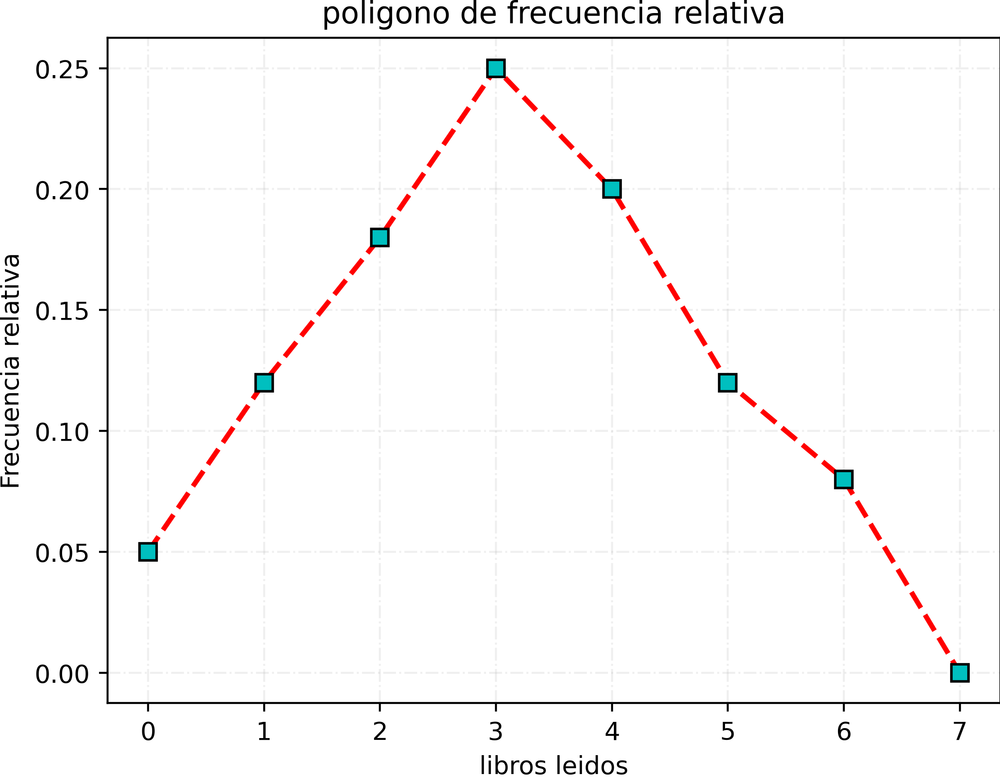
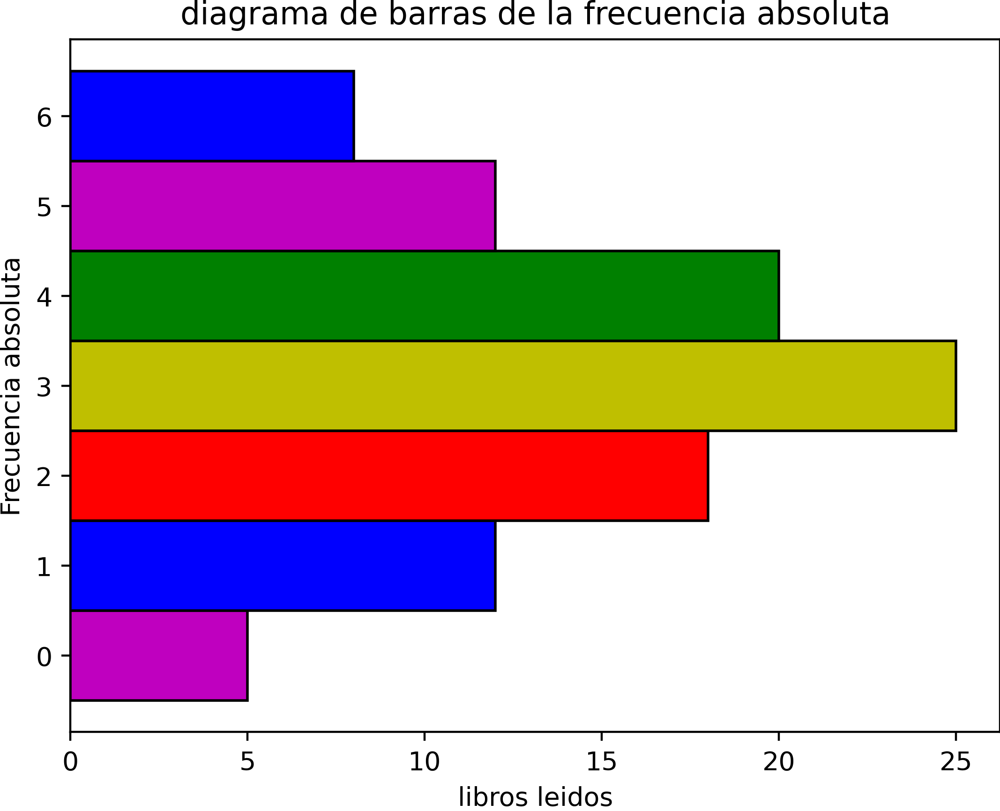
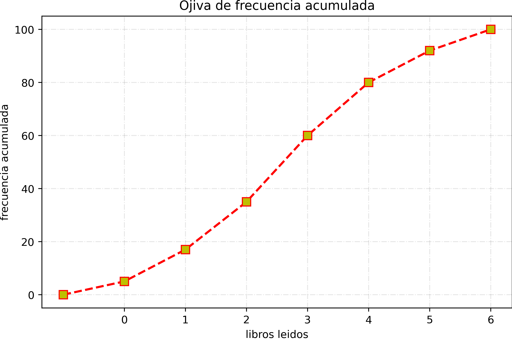
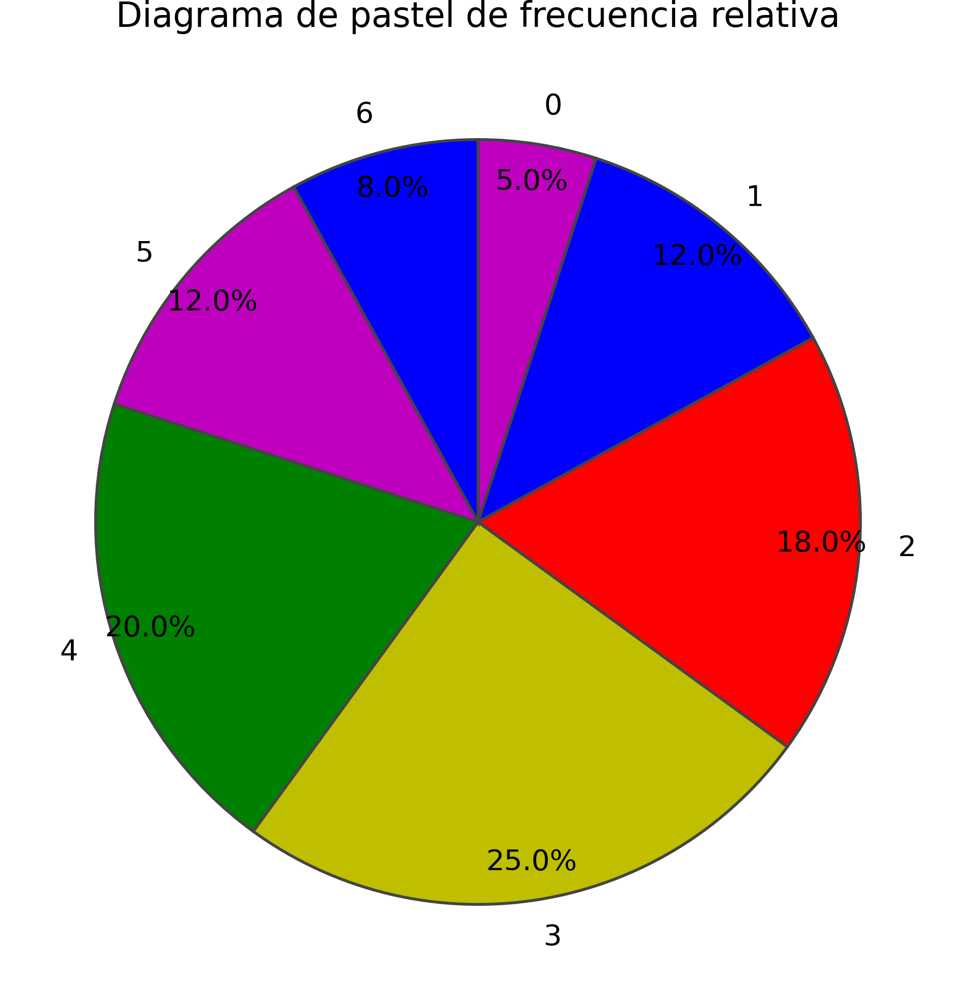
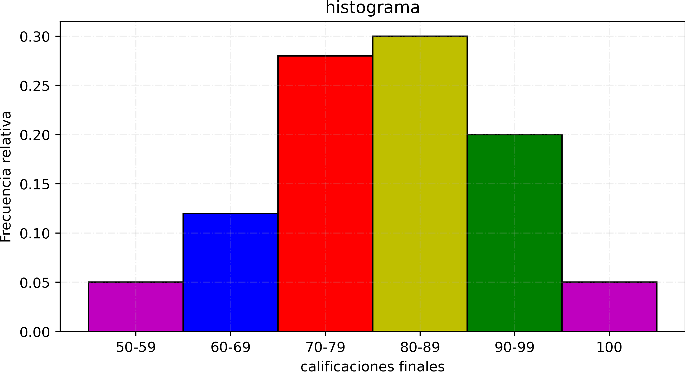
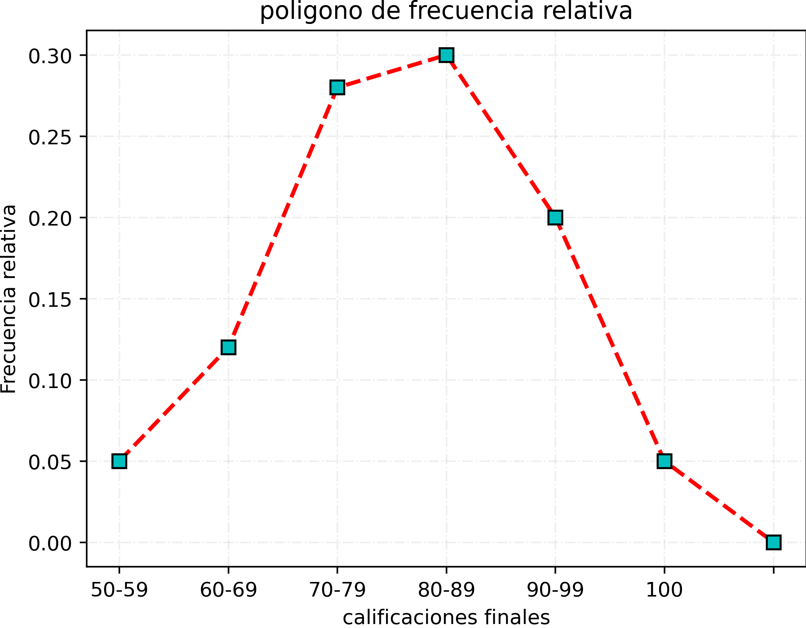
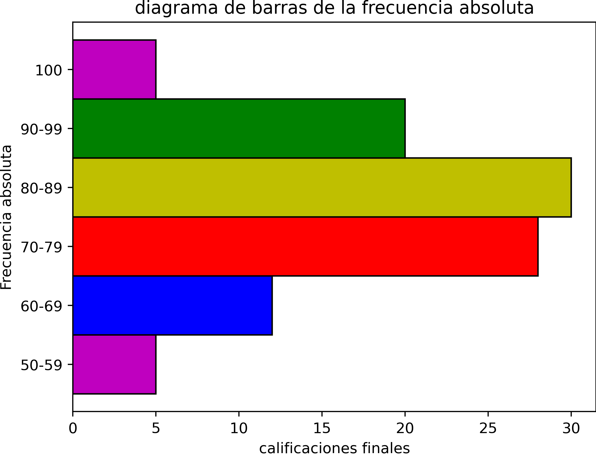
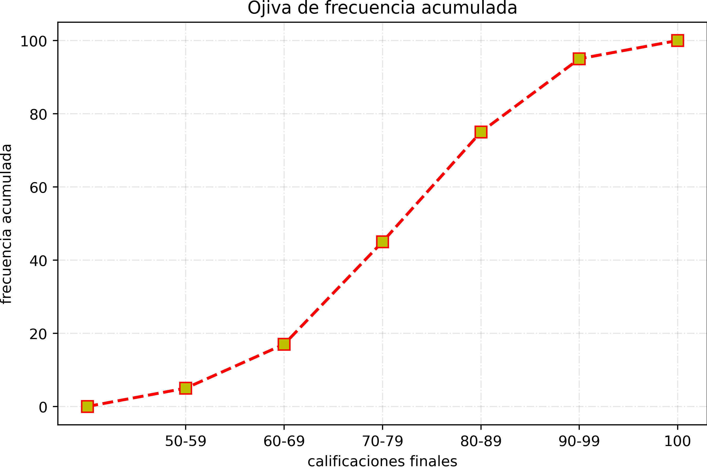
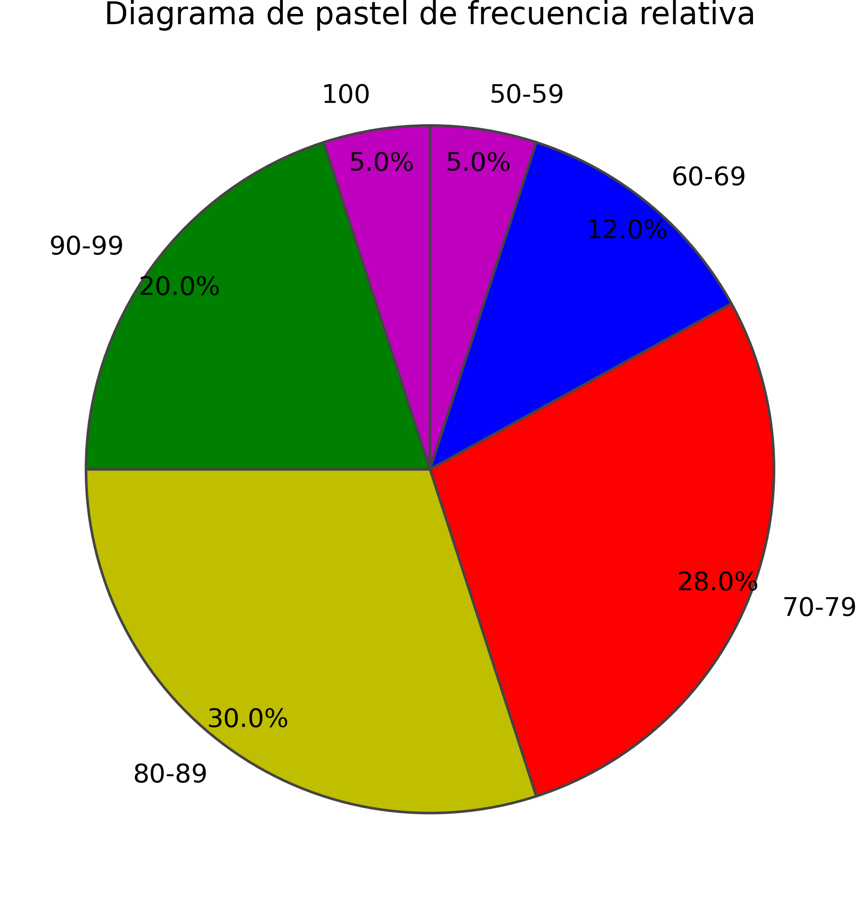

Contexto: Se realizó un estudio para analizar cuántos libros leyeron 100 estudiantes durante el último año. La variable es cuantitativa discreta porque solo admite valores enteros (0, 1, 2, 3...).
| Libros leídos (Clase) | Frecuencia Absoluta (fi) | Frecuencia Relativa (fr) | Frecuencia Acumulada (Fi) |
|---|---|---|---|
| 0 | 5 | 0.05 | 5 |
| 1 | 12 | 0.12 | 17 |
| 2 | 18 | 0.18 | 35 |
| 3 | 25 | 0.25 | 60 |
| 4 | 20 | 0.20 | 80 |
| 5 | 12 | 0.12 | 92 |
| 6 | 8 | 0.08 | 100 |
histograma de frecuencia relativa

poligono de frecuencia relativa

diagrama de barras de frecuencia absoluta

diagrama de ojiva de frecuencia acumulada

diagrama de pastel de frecuencia relativa

Se realizó un estudio con 100 estudiantes para analizar las calificaciones finales (escala 0–100) obtenidas en un examen de Estadística. Los datos fueron agrupados en intervalos de amplitud 10 para su análisis.
| Clase | Límite Inferior | Límite Superior | Marca de Clase (xi) | Frecuencia Absoluta (fi) | Frecuencia Relativa (fr) | Frecuencia Acumulada (Fi) |
|---|---|---|---|---|---|---|
| 50–59 | 50 | 59 | 54.5 | 5 | 0.05 | 5 |
| 60–69 | 60 | 69 | 64.5 | 12 | 0.12 | 17 |
| 70–79 | 70 | 79 | 74.5 | 28 | 0.28 | 45 |
| 80–89 | 80 | 89 | 84.5 | 30 | 0.30 | 75 |
| 90–99 | 90 | 99 | 94.5 | 20 | 0.20 | 95 |
| 100 | 100 | 100 | 100 | 5 | 0.05 | 100 |
histograma de frecuencia relativa

poligono de frecuencia relativa

diagrama de barras de frecuencia absoluta

diagrama de ojiva de frecuencia acumulada

diagrama de pastel de frecuencia relativa

Se realizó un estudio en un hospital para analizar el tiempo de espera (en minutos) en el área de urgencias para 100 pacientes. Los datos fueron agrupados en intervalos de 10 minutos para su análisis estadístico.
| Clase (minutos) | Frecuencia Absoluta (fi) | Frecuencia Relativa (fr) | Frecuencia Acumulada (Fi) |
|---|---|---|---|
| 0 – 9 | 6 | 0.06 | 6 |
| 10 – 19 | 14 | 0.14 | 20 |
| 20 – 29 | 25 | 0.25 | 45 |
| 30 – 39 | 28 | 0.28 | 73 |
| 40 – 49 | 17 | 0.17 | 90 |
| 50 – 59 | 10 | 0.10 | 100 |